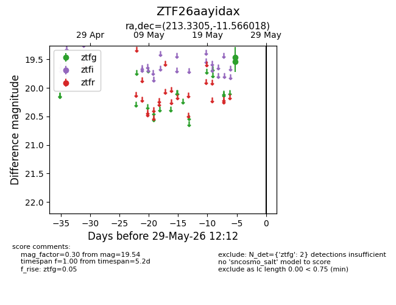
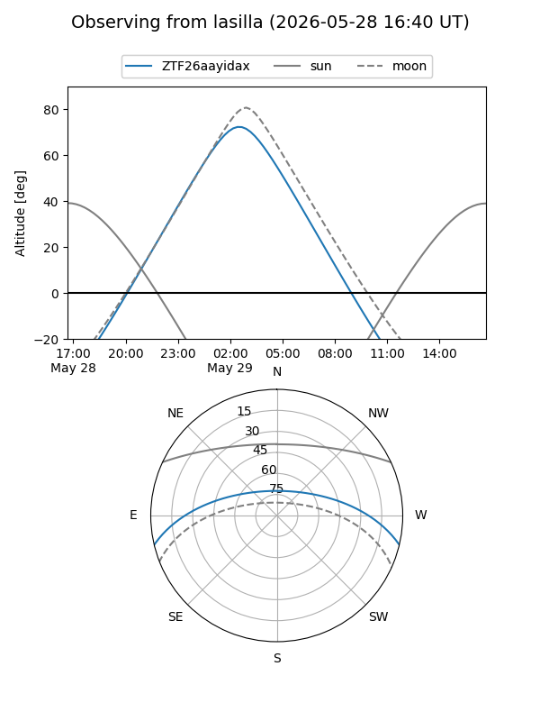
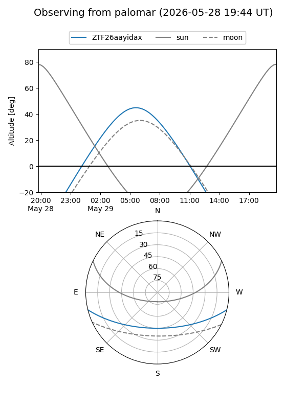

ZTF26aayidax
Target ZTF26aayidax at 2026-05-29 12:16
Aliases and brokers:
lsst-FINK: link
lsst-Lasair: link
lsst-ALeRCE: link
ztf-FINK: link
ztf-Lasair: link
ztf-ALeRCE: link
alt names
ZTF26aayidax (ztf,fink_ztf)
Coordinates:
equatorial (ra, dec) = 213.3305,-11.56602
equatorial (HMS+DMS) = 14:13:19.33,-11:33:57.66
galactic (l, b) = (332.7864,+46.50467)
Flags:
Photometry:
last ztfg=19.54
2 ztfg detections
Lightcurve

Visibility


Additional plots